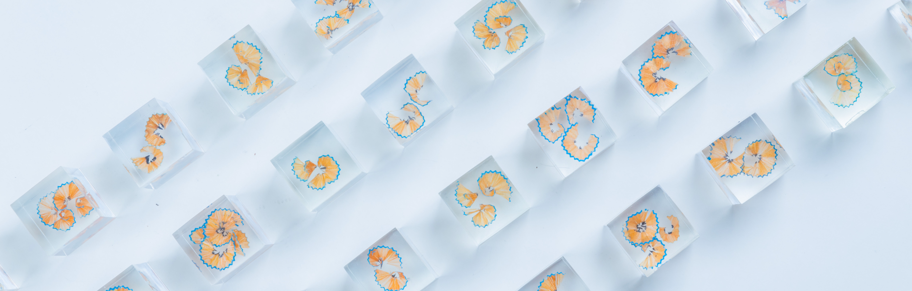
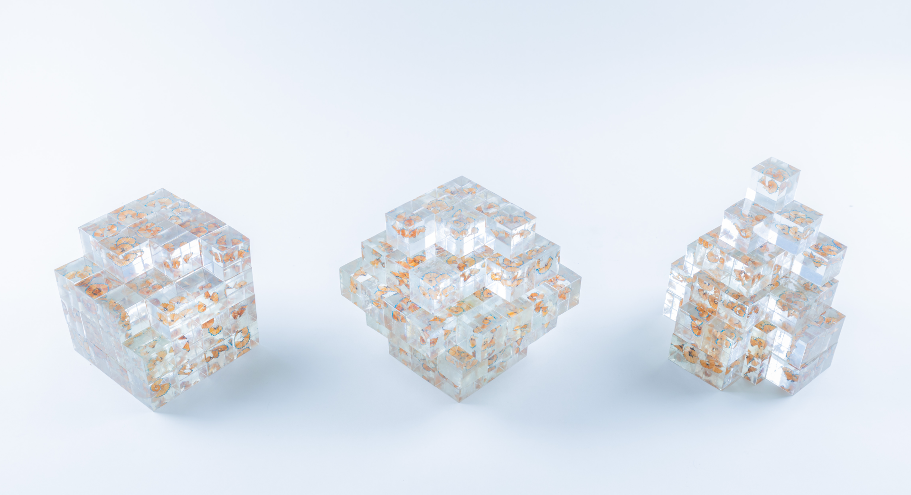
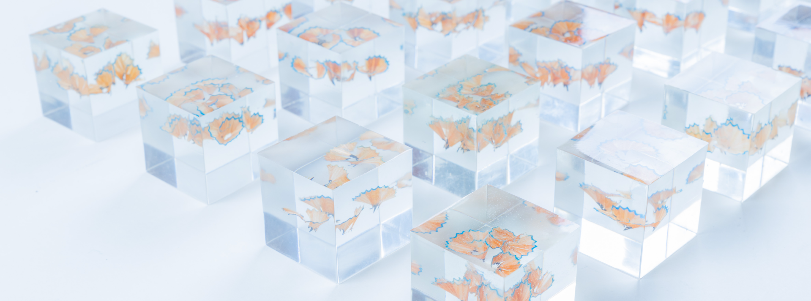
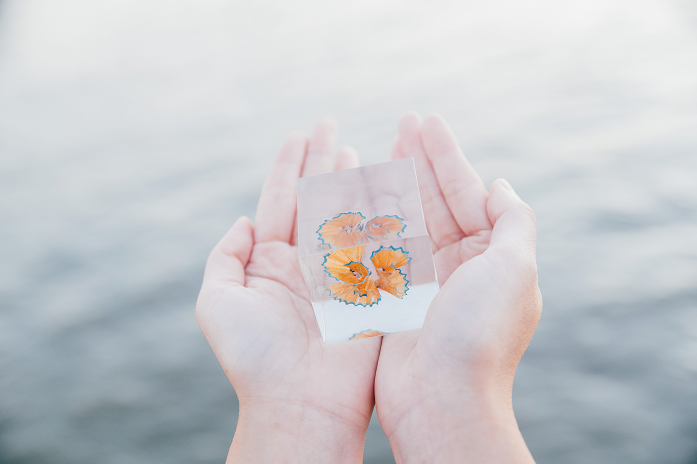
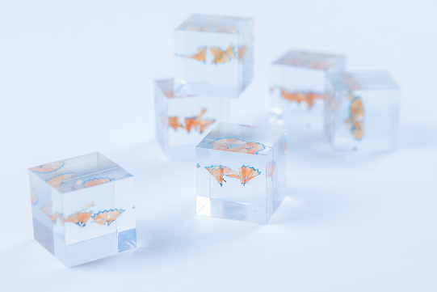
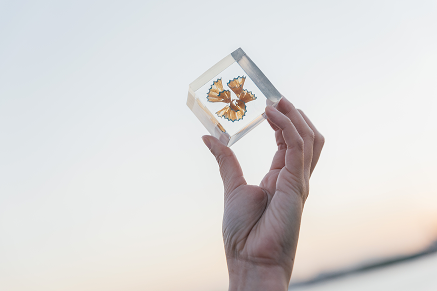
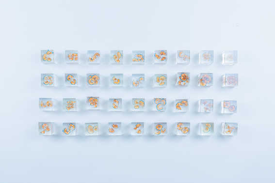
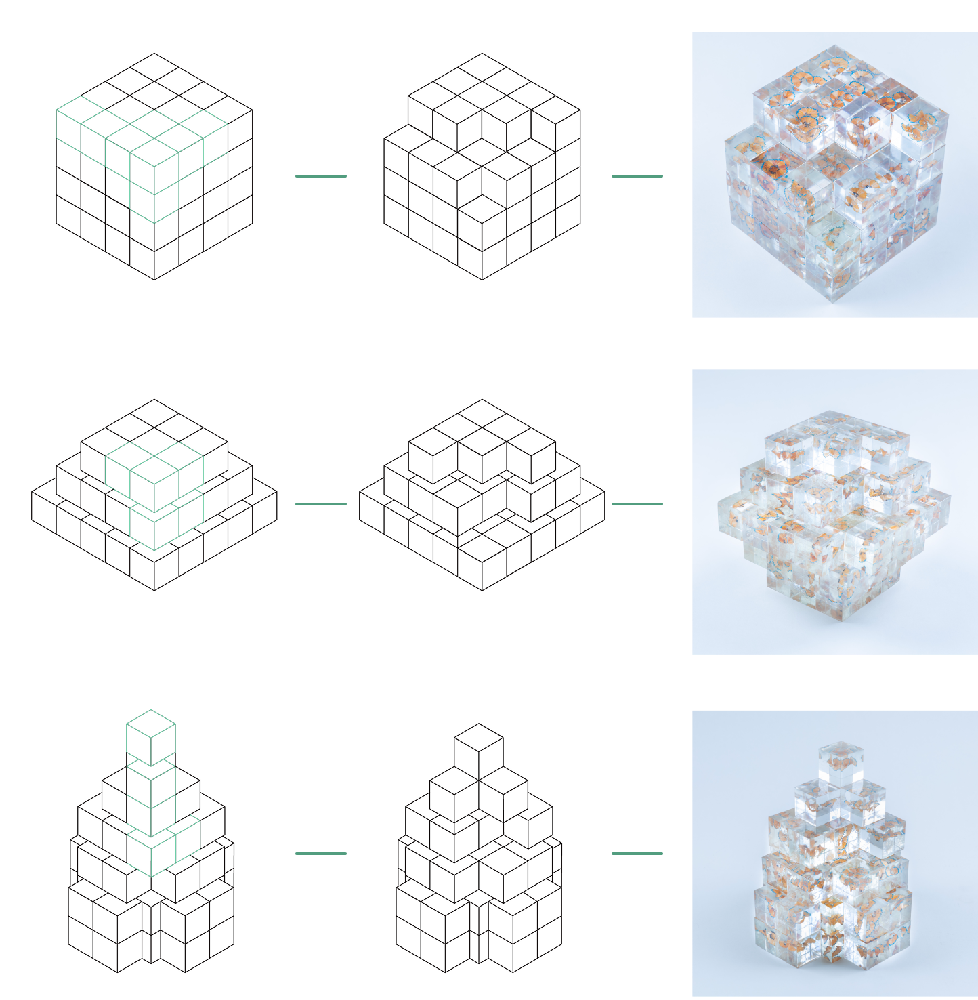
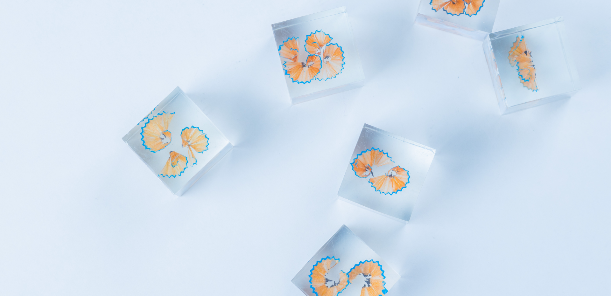

千里の道も一歩から始まる、一歩ずつ積み重ねの糸

トキ
樹脂 / 立体作品
2023 / エポキシ樹脂,鉛筆,スチのり

当プロジェクトには”時間”と”積み重ね”二つのポイントがある。
エポキシ樹脂の中に物を入れぱなしで、樹脂が固まってから物が入ったばかりのままであって、まるで時間が止まってる状態である。エポキシ樹脂のそういう特性で”時間”をキャッチする。”積み重ね”というコンセプトを表したいなら、少なみから多みに至った過程が重要だ。立方体の形で中に鉛筆の削り屑を入れる。個別によって入ってる削り屑の量も違う。
絵の練習には大体デッサンから初め、鉛筆で書いて鉛筆を削ってそういう繰り返しながらだんだん技術を磨いてきた。一つ一つの立方体はそれぞれの時間を表し、削り屑が少ないでからだんだん多くなって、そしていろいろな形に形成して、これは時間の積み重ねである。






立方体
円
角錐
どうしてこんな形に？
今回の形状は円、角錐、立方体三つの形で作成した。
この三つの形状を選んだ理由はデッサンで絵を習い始めたところはここから描きながら、光影の変化を観察した。そのような幾何練習は絵描きの一合目とも言えて、その過程は”積み重ね”の体現にはザ・ベストだ。
前述通りに、これは結果より過程を大事にしてるテーマなので、まだ途中という未完成を表したいと思う。そうするには、最初は形状三つの組み立て方を確認し、それに各形状からいくつの立方体を取り外した。各形状間のバランスをとりつつ形を崩さないように取り方もちゃんと工夫した。

LET'S SEE MORE!